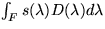

Sensibilitat Espectral:
La sensibilitat espectral es pot descriure com una funció on F denota un rang de freqüències (o longituds d'ona). Donada una llum amb una distribució espectral D, incidint en un con amb una sensibilitat espectral s, aquest emetrà un impuls nerviós proporcional a .
| tancar |